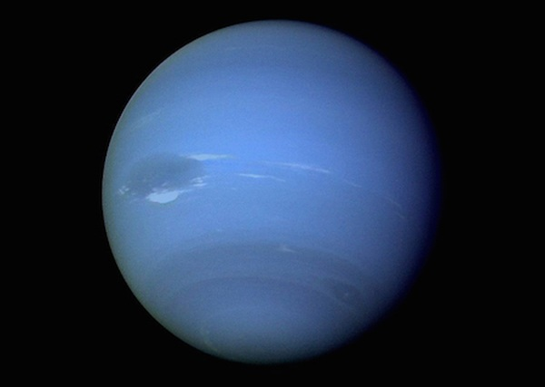

Нептун является восьмой планетой от Солнца и последней из известных планет.
Не смотря на то, что это третья по массивности планета, она является всего лишь четвертой с точки зрения диаметра.
Благодаря своей синей окраске Нептун получил имя римского бога моря.
По мере совершения тех или иных научных открытий у ученых часто возникают споры, какая именно из теорий заслуживает доверия.
Открытие Нептуна является наглядным примером таких разногласий.
После того, как 1781 году была открыта планета Уран, астрономы заметили, что его орбита подвержена значительным колебаниям, которых в принципе быть не должно.
В качестве обоснования этого непонятного явления была предложена гипотеза о существовании планеты, гравитационное поле которой и вызывает орбитальные отклонения Урана.
Тем не менее, первые научные труды, связанные с существования Нептуна появились только в 1845-1846 году, когда английский астроном Джон Коуч Адамс опубликовал свои расчеты о положении этой тогда еще неизвестной планеты.
Однако, несмотря на то, что он предоставил свою работу Королевскому научному сообществу (ведущей английской научно-исследовательской организации), его труд не вызвал ожидаемого интереса.
И только год спустя французский астроном Жан Жозеф Леверье также представил расчеты, которые были поразительно похожи на расчеты Адамса.
В результате независимых оценок научной работы двух ученых, научное сообщество наконец-то согласилось с их выводами и начало поиски планеты в области неба, на которую указывали исследования Адамс и Леверье.
Планета как таковая была обнаружена 23 сентября 1846 года немецким астрономом Иоганном Галлом.
Возврат на главную страницу